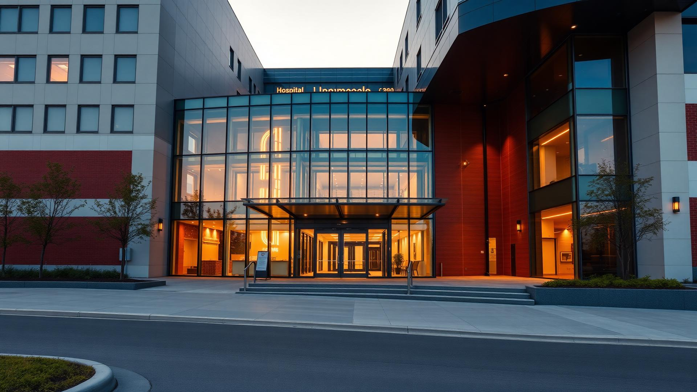

General OPD
Daily outpatient consultations with experienced physicians.

Peshawar · Islamabad · At Your Doorstep
Trusted Healthcare. Advanced Technology. Compassionate Care.
Abu Usman Hospital and Health Services is committed to providing trusted healthcare through advanced medical technology, experienced consultants, highly qualified healthcare professionals, and compassionate patient care. We proudly serve patients in both Peshawar and Islamabad while also providing quality healthcare services at patients' doorsteps.
Who We Are
Abu Usman Hospital and Health Services is a trusted healthcare provider based in Peshawar, Pakistan, offering comprehensive medical facilities, experienced consultants, and advanced healthcare solutions. Along with hospital-based treatment, we also provide healthcare services at patients' homes, making quality healthcare more accessible.
Our hospital is equipped with modern operation theatres, advanced diagnostic equipment, highly qualified doctors, experienced nursing staff, and compassionate healthcare professionals dedicated to delivering safe, efficient, and patient-centered care.
What We Offer
Comprehensive healthcare services under one roof — from everyday consultations to advanced surgical care.
Daily outpatient consultations with experienced physicians.
Round-the-clock emergency care for urgent medical needs.
Modern, fully equipped theatres for safe surgical procedures.
Advanced critical care with continuous patient monitoring.
Comfortable private rooms for restful recovery.
Dedicated, well-maintained wards for every patient.
Safe and supportive maternity and delivery care.
Accurate diagnostic testing with modern lab equipment.
Why Choose Us
We combine advanced technology, experienced professionals, and compassionate care to deliver the best patient outcomes.
Specialties
Expert care across a wide range of medical and surgical specialties.
Patient Stories
Locations
Serving patients in Peshawar and Islamabad — and at your doorstep.

Abu Usman Hospital and Health Services
Dabgari GardenOpposite Mission HospitalPeshawar CantonmentPeshawar
Abu Usman Hospital and Health Services
Nash One PlazaBlock CFaisal Town F-18Islamabad, Pakistan